<!DOCTYPE lake>
<h2 data-lake-id="u4gcW" id="u4gcW"><span data-lake-id="ufbe3bf0e" id="ufbe3bf0e">学习目标</span></h2><ul list="ufe28bcea"><li data-lake-id="u3004d2c4" fid="u7befd7e3" id="u3004d2c4"><span data-lake-id="u4caa8d8c" id="u4caa8d8c">了解ADC开发流程</span></li><li data-lake-id="u99eb4a76" fid="u7befd7e3" id="u99eb4a76"><span data-lake-id="ub9acdb8b" id="ub9acdb8b">掌握采样方式</span></li><li data-lake-id="uf840bfe1" fid="u7befd7e3" id="uf840bfe1"><span data-lake-id="uee606a76" id="uee606a76">能够使用ADC进行芯片内部通道进行采样</span></li><li data-lake-id="u12fced9e" fid="u7befd7e3" id="u12fced9e"><span data-lake-id="u42ce35ed" id="u42ce35ed">能够使用ADC对外部电路进行采样</span></li></ul><h2 data-lake-id="yWq9x" id="yWq9x"><span data-lake-id="ud2860f18" id="ud2860f18">学习内容</span></h2><h3 data-lake-id="RPair" id="RPair"><span data-lake-id="u14bafcb5" id="u14bafcb5">GD32F4的ADC</span></h3><p data-lake-id="u65f6b39d" id="u65f6b39d"><span data-lake-id="u9da410a7" id="u9da410a7">特点：</span></p><ul list="ube86e74a"><li data-lake-id="u66cf50cb" fid="uf25dd154" id="u66cf50cb"><span data-lake-id="u5fbd9f93" id="u5fbd9f93">16个外部模拟输入通道；</span></li><li data-lake-id="u0a22f642" fid="uf25dd154" id="u0a22f642"><span data-lake-id="u6bf2ae8a" id="u6bf2ae8a">1个内部温度传感通道(VSENSE)；</span></li><li data-lake-id="ufc489771" fid="uf25dd154" id="ufc489771"><span data-lake-id="u9a56acea" id="u9a56acea">1个内部参考电压输入通道(VREFINT)；</span></li><li data-lake-id="u063251b2" fid="uf25dd154" id="u063251b2"><span data-lake-id="uaa10aa2c" id="uaa10aa2c">1个外部监测电池VBAT供电引脚输入通道。</span></li></ul><p data-lake-id="u89cd2464" id="u89cd2464"><span data-lake-id="u41988273" id="u41988273">​</span><br/></p><h3 data-lake-id="u9qaB" id="u9qaB"><span data-lake-id="u6d94702f" id="u6d94702f">ADC开发流程</span></h3><p data-lake-id="u59824f27" id="u59824f27">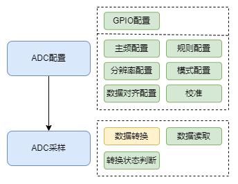</p><ol list="u57bb40cc"><li data-lake-id="u1be22ae7" fid="uf7143216" id="u1be22ae7"><span data-lake-id="u66e5bcde" id="u66e5bcde">ADC配置</span></li><li data-lake-id="u6b483775" fid="uf7143216" id="u6b483775"><span data-lake-id="u67f84252" id="u67f84252">ADC采样</span></li></ol><h4 data-lake-id="VmccM" id="VmccM"><span data-lake-id="uaee37e8c" id="uaee37e8c">ADC配置</span></h4><h5 data-lake-id="yq4P1" id="yq4P1"><span data-lake-id="u75587232" id="u75587232">GPIO配置</span></h5><p data-lake-id="ue56ad764" id="ue56ad764"><span data-lake-id="u46cca36f" id="u46cca36f">主要配置GPIO的模式和引脚信息，如果ADC采样需要通过引脚进行，则需要配置。</span></p><h5 data-lake-id="XwzMQ" id="XwzMQ"><span data-lake-id="u2f37efb4" id="u2f37efb4">主频配置</span></h5><p data-lake-id="u82dede65" id="u82dede65"><span data-lake-id="uff66bc18" id="uff66bc18">采样的频率配置。</span></p><span class="yuque-card-unsupported">[codeblock]</span><h5 data-lake-id="VaHdp" id="VaHdp"><span data-lake-id="ud2bfe93a" id="ud2bfe93a">分辨率和数据对齐配置</span></h5><ul list="u960441b7"><li data-lake-id="ub2b13798" fid="ud875507b" id="ub2b13798"><span data-lake-id="u83e3768b" id="u83e3768b">分辨率为采样精度: 可选为12位，10位，8位，6位。不同分辨率，取值精度范围不同：</span></li><li data-lake-id="u9a7ef22a" fid="ud875507b" id="u9a7ef22a"><span data-lake-id="u93d94d98" id="u93d94d98">左对齐与右对齐: 表示的是采样的数据，如何存储到寄存器的。我们获取的是寄存器存储的值。详见《GD32F4xx_User_Manual_Rev2.8_CN.pdf》14.4.7</span></li></ul><p data-lake-id="u863538bc" id="u863538bc">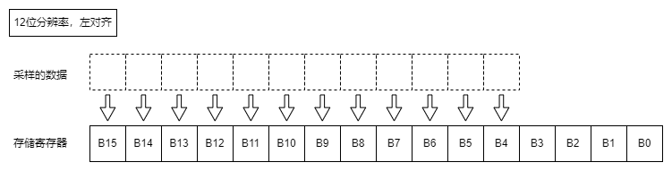</p><p data-lake-id="u0c92d9e4" id="u0c92d9e4">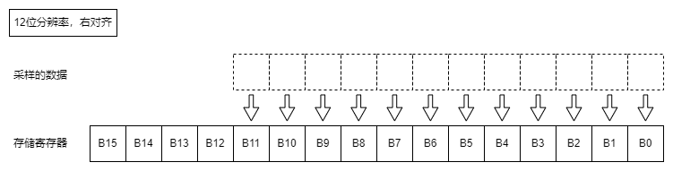</p><p data-lake-id="u6882d209" id="u6882d209"></p><p data-lake-id="udcbe9f2d" id="udcbe9f2d"></p><p data-lake-id="ucecc456b" id="ucecc456b"></p><p data-lake-id="u3e909278" id="u3e909278"></p><p data-lake-id="ub04af2e9" id="ub04af2e9"></p><p data-lake-id="ue5c2c016" id="ue5c2c016"></p><h5 data-lake-id="H2BL2" id="H2BL2"><span data-lake-id="u2bfc9392" id="u2bfc9392">规则配置</span></h5><p data-lake-id="uf06407b6" id="uf06407b6"><span data-lake-id="udb34dd1c" id="udb34dd1c">规则包含：</span></p><ul list="ueb8b4511"><li data-lake-id="u7233353e" fid="u2ea5cc84" id="u7233353e"><span data-lake-id="ufa56788a" id="ufa56788a">常规规则</span></li><li data-lake-id="u2b6aef0e" fid="u2ea5cc84" id="u2b6aef0e"><span data-lake-id="ub7ec12a6" id="ub7ec12a6">插入规则</span></li></ul><p data-lake-id="u7ab57e97" id="u7ab57e97"><span data-lake-id="u2e878652" id="u2e878652">​</span><br/></p><h5 data-lake-id="dCIA0" id="dCIA0"><span data-lake-id="u152e89ed" id="u152e89ed">模式配置</span></h5><p data-lake-id="u41a62509" id="u41a62509"><strong><span data-lake-id="u0e6aa47b" id="u0e6aa47b">Continuous Mode（连续模式）</span></strong></p><p data-lake-id="u75c30cc1" id="u75c30cc1"><span data-lake-id="u75f6ed65" id="u75f6ed65">定义：在连续模式下，一旦 ADC 被启动，它会不断地对选定的通道进行采样和转换，直到显式停止。</span></p><p data-lake-id="ube302f4a" id="ube302f4a"><span data-lake-id="u4e672c9c" id="u4e672c9c">用途：这个模式适用于需要持续监测某个信号的场合，比如读取一个模拟传感器的持续输出。</span></p><p data-lake-id="ub4dacc1b" id="ub4dacc1b"><span data-lake-id="u0f93b86c" id="u0f93b86c">特点：一旦开始，ADC 会连续不断地进行转换操作，无需每次转换都重新启动。</span></p><p data-lake-id="uc9b05013" id="uc9b05013"><strong><span data-lake-id="u5f007078" id="u5f007078">Scan Mode（扫描模式）</span></strong></p><p data-lake-id="u926cf329" id="u926cf329"><span data-lake-id="ue60299cd" id="ue60299cd">定义：在扫描模式下，ADC 按照预设的顺序自动扫描多个通道，并对每个通道进行一次采样和转换。</span></p><p data-lake-id="ucf6e3309" id="ucf6e3309"><span data-lake-id="ua96ea6db" id="ua96ea6db">用途：这个模式适用于需要周期性地监测多个通道（例如多个传感器）的场合。</span></p><p data-lake-id="ua648ff80" id="ua648ff80"><span data-lake-id="u80665a00" id="u80665a00">特点：ADC 在一系列通道上进行顺序采样，每个通道都被转换一次，然后整个序列可以重复进行，如果结合连续模式使用。</span></p><p data-lake-id="u873573eb" id="u873573eb"><span data-lake-id="u51db24d6" id="u51db24d6">​</span><br/></p><ul list="ub78545b2"><li data-lake-id="u14eac860" fid="u76b79084" id="u14eac860"><span data-lake-id="u723949ff" id="u723949ff">扫描模式</span></li><li data-lake-id="uc145c784" fid="u76b79084" id="uc145c784"><span data-lake-id="uae1cb4be" id="uae1cb4be">运行模式：连续or单次</span></li><li data-lake-id="u34562966" fid="u76b79084" id="u34562966"><span data-lake-id="u3df6a3c8" id="u3df6a3c8">插入序列自动转换模式</span></li></ul><p data-lake-id="u84fe1739" id="u84fe1739"><span data-lake-id="u25954388" id="u25954388">我们这里的模式并非是多选一的结构，而是多选多，自由搭配方式</span></p><table class="lake-table" data-lake-id="ygN0X" id="ygN0X" margin="true" style="width: 422px" width-mode="contain"><colgroup><col width="177"/><col width="124"/><col width="121"/></colgroup><tbody><tr data-lake-id="u939d6990" id="u939d6990"><td data-lake-id="ue979b655" id="ue979b655" style="vertical-align: middle"><p data-lake-id="ua7523e77" id="ua7523e77" style="text-align: center"><span data-lake-id="ua3867cbf" id="ua3867cbf">模式</span></p></td><td data-lake-id="ucd03bb07" id="ucd03bb07" style="vertical-align: middle"><p data-lake-id="u353dd074" id="u353dd074" style="text-align: center"><span data-lake-id="uba6b5695" id="uba6b5695">开启</span></p></td><td data-lake-id="u209c6109" id="u209c6109" style="vertical-align: middle"><p data-lake-id="ub86fbc9c" id="ub86fbc9c" style="text-align: center"><span data-lake-id="u689ab15f" id="u689ab15f">关闭</span></p></td></tr><tr data-lake-id="u201b15a6" id="u201b15a6" style="height: 36px"><td data-lake-id="ucc9fed89" id="ucc9fed89" style="vertical-align: middle"><p data-lake-id="ub5ae1b15" id="ub5ae1b15" style="text-align: center"><span data-lake-id="u8bf4a13a" id="u8bf4a13a">扫描模式</span></p></td><td data-lake-id="ud3e87c9f" id="ud3e87c9f" style="vertical-align: middle"><p data-lake-id="u57ddc41b" id="u57ddc41b" style="text-align: center"><span data-lake-id="ubc9363c3" id="ubc9363c3">​</span><br/></p></td><td data-lake-id="u186a9855" id="u186a9855" style="vertical-align: middle"><p data-lake-id="u191efcbd" id="u191efcbd" style="text-align: center"><br/></p></td></tr><tr data-lake-id="ubcd59453" id="ubcd59453"><td data-lake-id="u5a142e05" id="u5a142e05" style="vertical-align: middle"><p data-lake-id="ua4c8ace6" id="ua4c8ace6" style="text-align: center"><span data-lake-id="ub85eb0f8" id="ub85eb0f8">连续模式</span></p></td><td data-lake-id="u34c7e530" id="u34c7e530" style="vertical-align: middle"><p data-lake-id="u093b7cef" id="u093b7cef" style="text-align: center"><br/></p></td><td data-lake-id="uf0ed4454" id="uf0ed4454" style="vertical-align: middle"><p data-lake-id="ubdce87dd" id="ubdce87dd" style="text-align: center"><br/></p></td></tr><tr data-lake-id="u10275b0f" id="u10275b0f"><td data-lake-id="u55d0a5de" id="u55d0a5de" style="vertical-align: middle"><p data-lake-id="u812e52d5" id="u812e52d5" style="text-align: center"><span data-lake-id="u3b954651" id="u3b954651">插入序列自动转换模式</span></p></td><td data-lake-id="ue4d793d8" id="ue4d793d8" style="vertical-align: middle"><p data-lake-id="u4b1695ae" id="u4b1695ae" style="text-align: center"><br/></p></td><td data-lake-id="udd5b2852" id="udd5b2852" style="vertical-align: middle"><p data-lake-id="ubcc20794" id="ubcc20794" style="text-align: center"><br/></p></td></tr></tbody></table><h5 data-lake-id="AYOwq" id="AYOwq"><span data-lake-id="u7a3b3a66" id="u7a3b3a66">校准ADC</span></h5><span class="yuque-card-unsupported">[codeblock]</span><h4 data-lake-id="yZ77G" id="yZ77G"><span data-lake-id="u7d882070" id="u7d882070">ADC采样</span></h4><ol list="u449c02da"><li data-lake-id="u89a19738" fid="u2cb7ee30" id="u89a19738"><span data-lake-id="ucf9423da" id="ucf9423da">数据转换操作。这个是ADC电路实现的，我们主要是去触发它进行数据转换。</span></li><li data-lake-id="uaa8eef3c" fid="u2cb7ee30" id="uaa8eef3c"><span data-lake-id="ueecd6dfe" id="ueecd6dfe">转换状态。电路在转换过程中，会修改相应寄存器状态。我们可以通过判断寄存器状态来知道转换的进度。</span></li><li data-lake-id="u64d89f76" fid="u2cb7ee30" id="u64d89f76"><span data-lake-id="ub1b8c2af" id="ub1b8c2af">数据读取。转换完成后，我们去相应的寄存器读取数据。</span></li></ol><h3 data-lake-id="O6n0a" id="O6n0a"><span data-lake-id="u6ddeb695" id="u6ddeb695">需求：采样芯片温度</span></h3><p data-lake-id="u0142ba7e" id="u0142ba7e"><span data-lake-id="u1964d406" id="u1964d406">读取芯片的温度。芯片内置温度采样电路，可以通过ADC进行采样。</span></p><h4 data-lake-id="KhyYw" id="KhyYw"><span data-lake-id="ud5eb9386" id="ud5eb9386">初始化</span></h4><span class="yuque-card-unsupported">[codeblock]</span><h4 data-lake-id="mR91K" id="mR91K"><span data-lake-id="ub19825d8" id="ub19825d8">获取采样</span></h4><span class="yuque-card-unsupported">[codeblock]</span><ul list="u76c58d66"><li data-lake-id="u4170bd32" fid="ud7647c52" id="u4170bd32"><span data-lake-id="u628b09ce" id="u628b09ce">通过软触发调用adc进行采样。</span></li><li data-lake-id="uc3fa8b5e" fid="ud7647c52" id="uc3fa8b5e"><span data-lake-id="u54bd7426" id="u54bd7426">adc的规则通道为常规通道，通过</span><code data-lake-id="u39249995" id="u39249995"><span data-lake-id="u04207624" id="u04207624">adc_routine_data_read</span></code><span data-lake-id="u09bdcf8d" id="u09bdcf8d">读取数据</span></li></ul><p data-lake-id="u4f483043" id="u4f483043">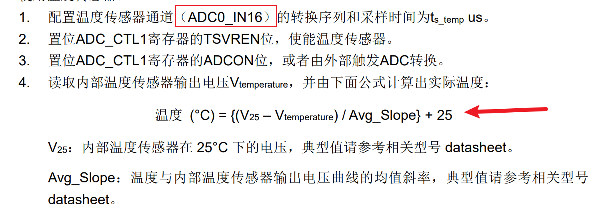</p><p data-lake-id="u427d886d" id="u427d886d">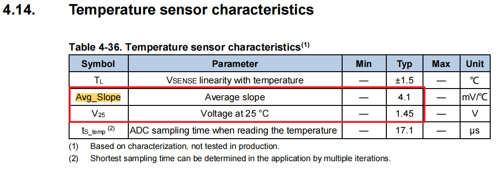</p><h4 data-lake-id="TOBag" id="TOBag"><span data-lake-id="ub7946109" id="ub7946109">完整代码</span></h4><span class="yuque-card-unsupported">[codeblock]</span><h4 data-lake-id="FcfHM" id="FcfHM"><span data-lake-id="u9d3cdfd5" id="u9d3cdfd5">单次运行模式</span></h4><p data-lake-id="uea9ec626" id="uea9ec626">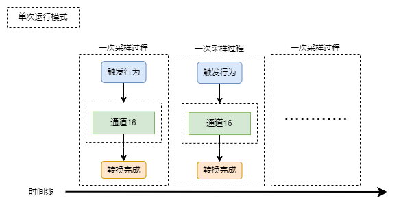</p><ul list="u29f26d4d"><li data-lake-id="u967e2e74" fid="ua69fd47d" id="u967e2e74"><span data-lake-id="uaf86d0ac" id="uaf86d0ac">每次采样，都需要触发</span></li></ul><p data-lake-id="u673cb316" id="u673cb316"><br/></p><h3 data-lake-id="TJcxM" id="TJcxM"><span data-lake-id="u68508363" id="u68508363">需求：电位器</span></h3><p data-lake-id="ua0946deb" id="ua0946deb">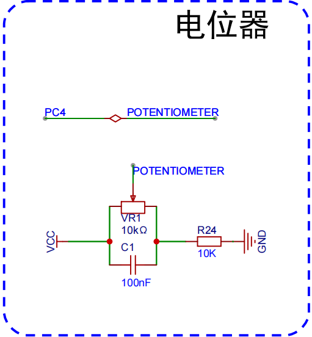</p><p data-lake-id="u410cf0b3" id="u410cf0b3"><br/></p><h4 data-lake-id="kL21P" id="kL21P"><span data-lake-id="u0f59bbd3" id="u0f59bbd3">初始化</span></h4><span class="yuque-card-unsupported">[codeblock]</span><ul list="ua54761b4"><li data-lake-id="ua95cd823" fid="ub3dcca48" id="ua95cd823"><span data-comment-id="42145831" data-lake-id="u51569655" id="u51569655">GPIO初始化，PC4初始化为模拟数据采集类型。</span></li></ul><h4 data-lake-id="E55BL" id="E55BL"><span data-lake-id="u734dd8d7" id="u734dd8d7">获取采样</span></h4><span class="yuque-card-unsupported">[codeblock]</span><ul list="uad79ad50"><li data-lake-id="u613f24c8" fid="u44309f9f" id="u613f24c8"><span data-lake-id="uf1777175" id="uf1777175">通过软触发调用adc进行采样。</span></li><li data-lake-id="u8b633526" fid="u44309f9f" id="u8b633526"><span data-lake-id="u19ece319" id="u19ece319">adc的规则通道为常规通道，通过</span><code data-lake-id="ub4a04086" id="ub4a04086"><span data-lake-id="u5714c159" id="u5714c159">adc_routine_data_read</span></code><span data-lake-id="u3c89273d" id="u3c89273d">读取数据</span></li></ul><h3 data-lake-id="bcPJU" id="bcPJU"><span data-lake-id="u59ca3d60" id="u59ca3d60">多通道采样</span></h3><p data-lake-id="ufc616e3e" id="ufc616e3e"><span data-lake-id="u200bc801" id="u200bc801">需要同时采样芯片内部的温度和外部电位器的电压。</span></p><h4 data-lake-id="aL05f" id="aL05f"><span data-lake-id="ua1d7ebb3" id="ua1d7ebb3">初始化</span></h4><span class="yuque-card-unsupported">[codeblock]</span><h4 data-lake-id="ddasS" id="ddasS"><span data-lake-id="u3badadb6" id="u3badadb6">获取采样</span></h4><blockquote class="lake-alert lake-alert-warning" data-lake-id="ue2564c04" id="ue2564c04"><p data-lake-id="u3c8d24fb" id="u3c8d24fb"><strong><span data-comment-id="42175262" data-lake-id="u11a17970" id="u11a17970">问题注意：</span></strong><span data-comment-id="42175262" data-lake-id="u8a6f4784" id="u8a6f4784">由于多个通道使用的是同一个SAR逐次逼近模数转换器，如果其中一个通道采样的电压过高（阻抗较大），</span><span class="lake-fontsize-12" data-comment-id="42175262" data-lake-id="ua301fcdd" id="ua301fcdd" style="color: rgb(64, 64, 64)">残余电荷可能</span><span data-comment-id="42175262" data-lake-id="uf31cfd10" id="uf31cfd10">对其他通道的采样结果产生影响。所以使用</span><code data-lake-id="u9b471795" id="u9b471795"><span data-comment-id="42175262" data-lake-id="ucbf7ae3d" id="ucbf7ae3d" style="color: #DF2A3F">ADC_SAMPLETIME_15</span></code><span data-comment-id="42175262" data-lake-id="uafffc2a1" id="uafffc2a1">次采样的数据结果会有很大误差。这个与芯片内部设计有关，不同芯片厂商和型号的影响程度不同。</span></p><p data-lake-id="ue3a9d3b6" id="ue3a9d3b6"><strong><span data-lake-id="ua79784b8" id="ua79784b8">解决方法：</span></strong></p><p data-lake-id="u59d3d9da" id="u59d3d9da"><span data-lake-id="u94fd44b2" id="u94fd44b2">将每轮的采样次数调大，例如：</span><code data-lake-id="uf7e54c77" id="uf7e54c77"><span data-lake-id="uab2cafdf" id="uab2cafdf" style="color: #DF2A3F">ADC_SAMPLETIME_144</span></code><span data-lake-id="uf50cfd10" id="uf50cfd10">，可屏蔽这种影响。原理是前几次采样可以将异常的</span><span class="lake-fontsize-12" data-lake-id="uabf754fe" id="uabf754fe" style="color: rgb(64, 64, 64)">电荷完全释放，后边的多次采样将结果拉回真实值。</span></p></blockquote><span class="yuque-card-unsupported">[codeblock]</span><p data-lake-id="u8145766c" id="u8145766c"><span data-lake-id="u047d8014" id="u047d8014">触发采样时配置通，获取采样结果。</span></p><p data-lake-id="ub92e5676" id="ub92e5676"><br/></p><h3 data-lake-id="LWC1v" id="LWC1v"><span data-lake-id="ucb3e28e2" id="ucb3e28e2">多通道采样DMA</span></h3><p data-lake-id="ufcf253b9" id="ufcf253b9"><span data-lake-id="udd2cecfe" id="udd2cecfe">现在需要采样数据，采集多路数据，采用DMA的方式帮助我们搬运数据</span></p><h4 data-lake-id="q1PgD" id="q1PgD"><span data-lake-id="u6e51f5f0" id="u6e51f5f0">初始化</span></h4><span class="yuque-card-unsupported">[codeblock]</span><ul list="ud377f1f1"><li data-lake-id="u4b70cbf2" fid="u5369669b" id="u4b70cbf2"><span data-lake-id="ude5ee536" id="ude5ee536">ADC初始化，需要配置DMA模式开启</span></li></ul><span class="yuque-card-unsupported">[codeblock]</span><ul list="u1158ea24"><li data-lake-id="u4c83c1e2" fid="ucf10d29d" id="u4c83c1e2"><span data-lake-id="u5252d57c" id="u5252d57c">开启循环模式，dma会自动进行数据搬运。</span></li></ul><h4 data-lake-id="G7xDr" id="G7xDr"><span data-lake-id="u8f229405" id="u8f229405">采样数据获取</span></h4><span class="yuque-card-unsupported">[codeblock]</span><ul list="u4f24bdf5"><li data-lake-id="ud0735e66" fid="u5cdb93e2" id="ud0735e66"><span data-lake-id="u39a32af6" id="u39a32af6">使用了DMA后，就不必去ADC寄存器中取数据，可以直接到内存中获取。</span></li></ul><h3 data-lake-id="TSO5f" id="TSO5f"><span data-lake-id="uac8471a6" id="uac8471a6">运行模式</span></h3><h4 data-lake-id="WD2S3" id="WD2S3"><span data-lake-id="u1a27442e" id="u1a27442e">连续运行模式</span></h4><p data-lake-id="uee62639b" id="uee62639b">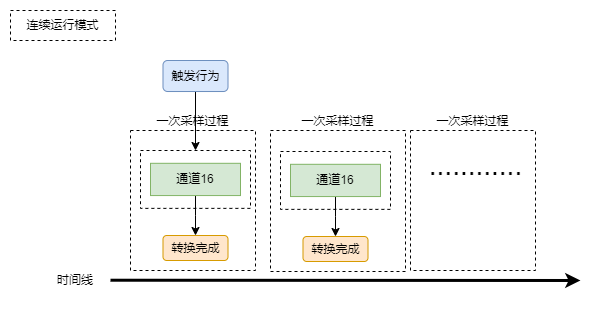</p><p data-lake-id="uf032dcee" id="uf032dcee"><span data-lake-id="u1acb8286" id="u1acb8286">连续运行模式，只需要触发一次采样，ADC后续会自动帮助进行采样。</span></p><p data-lake-id="u316bb3a8" id="u316bb3a8"><span data-lake-id="u3b73df30" id="u3b73df30">对应的配置为：</span></p><span class="yuque-card-unsupported">[codeblock]</span><h4 data-lake-id="zRDbL" id="zRDbL"><span data-lake-id="u33c8f44f" id="u33c8f44f">扫描模式</span></h4><p data-lake-id="u233f1d3b" id="u233f1d3b">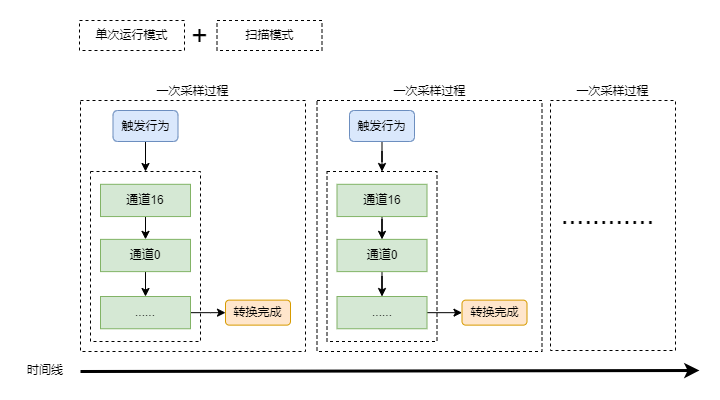</p><p data-lake-id="ua1f4e5de" id="ua1f4e5de"><span data-lake-id="uf16bf32c" id="uf16bf32c">扫描模式，是在多个通道需要同时采样的情况下使用的，确保每个通道都能够获得数据。</span></p><p data-lake-id="ubb854233" id="ubb854233"><span data-lake-id="u9db0f933" id="u9db0f933">如果是多个通道采样时，不配置扫描模式，则只会读取第一个序列的数据：</span></p><p data-lake-id="udc44d757" id="udc44d757">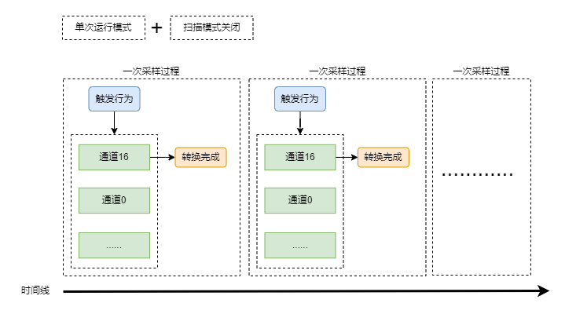</p><h4 data-lake-id="b6EoF" id="b6EoF"><span data-lake-id="u7fe094ac" id="u7fe094ac">连续运行+扫描模式</span></h4><p data-lake-id="ub84023e2" id="ub84023e2">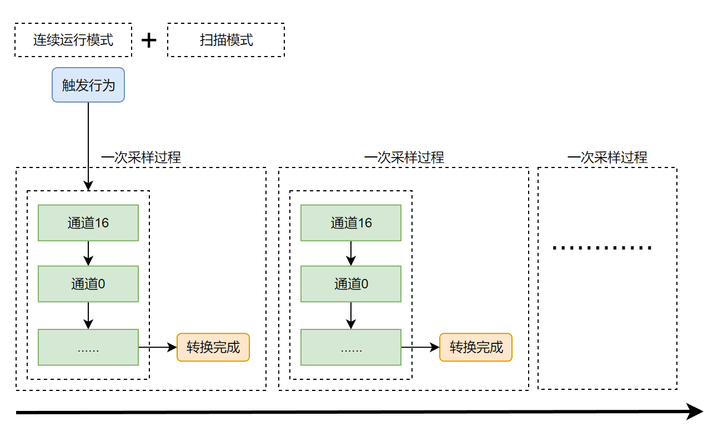</p><h3 data-lake-id="KEpqA" id="KEpqA"><span data-lake-id="u10514043" id="u10514043">完整代码</span></h3><span class="yuque-card-unsupported">[codeblock]</span><blockquote class="lake-alert lake-alert-color3" data-lake-id="uee11ed1b" id="uee11ed1b"><p data-lake-id="u1942e5bd" id="u1942e5bd"><span data-lake-id="ud6a5a86c" id="ud6a5a86c">注意：</span></p><p data-lake-id="uc39d5844" id="uc39d5844"><span data-lake-id="u6b181905" id="u6b181905">这里计算电压值的分母是</span><code data-lake-id="ubbe82981" id="ubbe82981"><span data-lake-id="ud76a2e65" id="ud76a2e65">4095</span></code><span data-lake-id="u92027ef2" id="u92027ef2">，不是</span><code data-lake-id="u98e3006b" id="u98e3006b"><span data-lake-id="u65cba3df" id="u65cba3df">4096</span></code><span data-lake-id="u01cd39a9" id="u01cd39a9">，因为value的范围是</span><code data-lake-id="u4e7256a4" id="u4e7256a4"><span data-lake-id="u72cc5f96" id="u72cc5f96">[0, 4095]</span></code><span data-lake-id="ud88f4a6a" id="ud88f4a6a">，如果用4096作为分母，则value为最大值4095时，计算不可能得到3.3V的最大电压值</span></p></blockquote><h2 data-lake-id="wG5Ui" id="wG5Ui"><span data-lake-id="u9f89f963" id="u9f89f963">练习题</span></h2><ol list="u80abdc7c"><li data-lake-id="u60fa1859" fid="u2ecd1193" id="u60fa1859"><span data-lake-id="u967625ae" id="u967625ae">使用ADC进行采样芯片温度</span></li><li data-lake-id="ue0eac818" fid="u2ecd1193" id="ue0eac818"><span data-lake-id="u6b22f848" id="u6b22f848">使用ADC进行采样电位器</span></li><li data-lake-id="u362f9bc6" fid="u2ecd1193" id="u362f9bc6"><span data-lake-id="u6148b980" id="u6148b980">使用ADC进行采样NTC温度</span></li></ol>